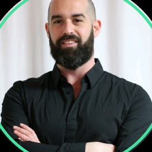

Clinical partnerships
Built with leading hospitals
We run research collaborations with leading academic medical centers, from protocol design to clinical validation against established measures.
Detecting changes in brain function in daily life through routine smartphone use to advance research, guide care and develop better treatments.
After treatment starts in week 4, psychomotor function, alertness and executive function each rise above the participant's personal baseline band, at different times.
Developed with leading hospitals to measure change within each individual, across conditions and over time.
We run research collaborations with leading academic medical centers, from protocol design to clinical validation against established measures.
The same passive measurement works across neurological and psychiatric conditions, and in women's health and healthy aging.
Our patent-pending models learn what is normal for each person, including their daily rhythms and natural ups and downs. Change is then measured against that person rather than a population average.
Shows when a response to treatment starts, how large it is and whether it lasts, using the weeks between clinic visits rather than a few snapshots.
Our signal-processing pipelines account for context, device, time of day and mood, so a bad night or a busy day is not mistaken for a real change. The result is fewer false alerts.
Runs in the background on the phone people already use, with no tests to take and nothing to wear. Processing happens on the device, so what people type never leaves their phone.
Each study tests our signals against independent clinical reference measures.
Processing speed, fine motor dexterity and linguistic features, compared with SDMT, 9HPT and MoCA. Studying natural variability, false alerts and sensitivity to within-person change.
Protocol and validation developmentTyping and phone-motion patterns alongside clinical ratings, levodopa timing and ON/OFF observations (MDS-UPDRS).
Planned clinical studyCognition, fatigue, sleep and menopause-related content, with a focus on everyday function and intervention response.
Exploratory research conceptPeriodic assessments miss what happens in between, such as early decline, a response to treatment, daily fluctuation, fatigue and recovery. In MS, Parkinson's, dementia, epilepsy and migraine, this is often what matters most.
Three visits over six months
Deterioration, recovery and treatment response between visits
Did function truly change, when did it happen, and was it associated with treatment?
Neurology, mental health and healthy aging have a common need: to understand how everyday function changes over time, and why.
Did the treatment change daily function, and how?
An exploratory measurement layer that complements the sponsor's intervention, clinical assessments and established endpoints.
How does everyday function change in neurodegenerative disease?
A digital measurement partner for academic and EU-funded research investigating treatment-linked functional change in daily life.
What is happening between visits?
Continuous visibility into how patients function in daily life, to support earlier review and more targeted monitoring.
Did sleep or lifestyle changes improve daily brain function?
Functional outcomes for programs and products that aim to improve cognition, sleep and everyday well-being.
Independent studies link everyday typing to motor, cognitive and treatment-related outcomes. We build on that work, with a focus on detecting reliable change in each individual.
102 people with MS followed for one year: everyday typing on their own phones tracked upper-limb function and processing speed (9HPT, SDMT).
Unsupervised at-home typing was explored as a remote marker of response to dopaminergic treatment in early Parkinson's disease.
In people with mood disorders, passive smartphone typing behavior alone was used to estimate processing speed and executive function.
A review of keystroke dynamics for neurocognitive research, including methodological and ethical considerations.
Independent literature cited for context. Phenometric is research-stage technology and is not intended to diagnose or treat any condition.
Product, signal engineering and AI experience, working closely with clinicians and neuroscientists.
Product, AI and digital health leader with 20+ years building and scaling products.
13+ years in R&D and signal engineering; leads the platform and regulated medical software development.

Leads signal processing and analytics for longitudinal functional measures.

Neurologist focused on MS, clinical workflows and meaningful validation measures.
Neuroscientist focused on cognition, motor function and study rigor.
Name to be announcedA strategic collaboration taking Phenometric from clinical validation to real-world adoption.
We're working with research partners, trial sponsors and health systems to make everyday brain function measurable. Let's talk about your study.